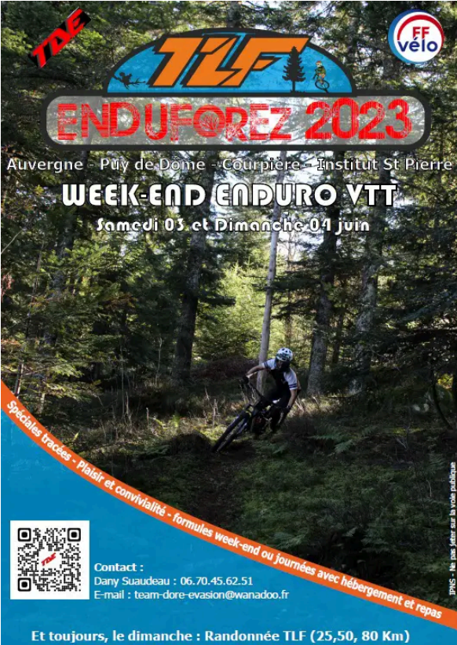

Bonjour, je m'appelle Hugo Creneau
Je suis Developpeur
En tant qu'étudiant en Première année de BUT Informatique passionné par le développement web, je manie les langages HTML, CSS et JavaScript pour créer des expériences en ligne captivantes. Mon approche créative se reflète dans mes designs uniques, tandis que mon adaptabilité me permet de m'ajuster aux défis techniques avec aisance. Ma rigueur assure la qualité et la fiabilité de chaque ligne de code. En combinant mes compétences techniques et mes qualités personnelles de créativité, d'adaptabilité et de rigueur, je suis en mesure de transformer des concepts en réalité numérique de manière efficace et professionnelle. Pour la rentrée 2024, je suis à la recherche d'une alternance dans le domaine du développeur web sur un rythme de 3 mois 3 mois.
Je vous invite à télécharger mon CV ci-dessous ou à consulter mon LinkedIn.
Mon CV Mon LinkedIn
Mon Expérience
Mon Parcours
2023 -2024
1ere année BUT Informatique
Le BUT Informatique me plonge dans le développement, un monde d'opportunités pour l'innovation. Durant cette année, j'ai abordé de nombreux sujets tels que le développement web avec les langages HTML, CSS ou PHP, mais également le développement applicatif en C#, C++ et XAML.
2021 - 2023
Obtention du diplome du Baccalauréat
Durant ces années au lycée Jean-Zay à Thiers(63), j'ai obtenu le diplome du Baccalauréat avec mention en étudiant les spécialités Mathématiques, Physique-Chimie et Numérique et sciences de l'informatique(NSI).
Expérience professionnelle
22-23 mai 2022 - 3-4 juin 2023
Bénévolat durant l'évenement enduforez
En mai 2022 et en juin 2023, je faisais partie des responsables de l’organisation d’un événement de VTT nommé EnduForez accueillant plus de 700 participants. J’ai donc dû participer a la gestion du logement des personnes, de leur restauration, du stockage de leurs véhicules, de l’acheminement des participants par navettes sur le lieu de départ de l’événement, ainsi que leur ravitaillement lors du parcours. Cette expérience m’a donc permis de prendre mes responsabilités lors de l’organisation d’un événement sportif accueillant de nombreuses personnes ainsi que d’apprendre à réagir vite face à des situations pouvant s’avérer problématiques telles que, lors de cet événement, des prises de retard liées aux navettes.
Compétences
Web Design
Le webdesign est l'art de concevoir des interfaces web attrayantes et fonctionnelles, alliant esthétique et utilité pour offrir une expérience utilisateur optimale. La réalisation de ce PortFolio m'a permis de m'entrainer dans ce domaine.
Web Development
Le développement web englobe la création et la maintenance de sites web, utilisant des langages de programmation comme HTML, CSS et JavaScript pour concevoir des interfaces interactives et des fonctionnalités dynamiques. Les cours de web m'ont formés à cette pratique et j'ai continué à en faire après la fin de ce module car c'est un domaine qui me passionne.
Algorithmie
L'algorithmie est l'art de résoudre des problèmes en décomposant des tâches complexes en étapes simples, utilisant des algorithmes efficaces pour trouver des solutions optimales dans divers domaines, de l'informatique à la science des données. Je me suis familiarisé avec ce domaine lors de ma formation en étudiant notament le C.
Coding
Le coding, ou codage, fait référence à l'acte d'écrire du code informatique dans des langages de programmation spécifiques, permettant de créer des applications, des sites web, des logiciels et bien plus encore. C'est une pratique qui me passionne de part la liberté que cela procure de pourvoir tout créer à partir de rien. J'ai pour habiotude d'utiliser l'éditeur de code Visual Studio Code car celui-ci à un design confortable ainsi que de nombreuses fonctionnalités utiles telles que Git qui permet le partage de mon travail avec mes coéquipiers.
Développement Orienté Objet
Le développement orienté objet est une approche de programmation où les concepts du monde réel sont modélisés en objets, chacun ayant des propriétés et des comportements spécifiques. J'ai découvert à travers le C++ ce versant du développement, c'est un langage crée à partir du C que j'avais étudié précédament. Cela m'a permis de me focaliser sur le côté objet du développement plutôt que sur le langage
Développement Applicatif
Le développement applicatif avec XAML et C# consiste à créer des applications interactives pour les plateformes Windows en utilisant le langage de balisage XAML pour la conception d'interfaces utilisateur et le langage de programmation C# pour la logique applicative. Cette approche permet de développer des applications riches et performantes pour une variété de dispositifs.
Qualités
Créativité
La créativité est une qualité essentielle dans le domaine du design et du développement, permettant de générer des idées innovantes, de résoudre des problèmes de manière originale et d'apporter une touche unique à chaque projet. Elle se manifeste par la capacité à penser différemment, à explorer de nouvelles voies et à repousser les limites de la conception et de la programmation. Le développement de ce PortFolio ainsi que de mes différents projets m'ont permis d'entrainer cette qualité et de l'éxercer avec brio.
Adaptibilité
L'adaptabilité est une qualité clé qui me caractérise. Elle se manifeste par ma capacité à m'ajuster facilement aux changements, à m'adapter à de nouvelles situations et à trouver des solutions créatives face à des défis imprévus. Cette qualité me permet de rester efficace et productif dans des environnements dynamiques et en constante évolution. Je m'adapte en continu dans le développement car, pour de nombreux projets, il est necessaire de changer de langage et donc de s'adapter constamment.
Rigueur
La rigueur est l'une de mes qualités fondamentales. Elle se manifeste dans mon approche méthodique du travail, ma capacité à suivre des processus avec précision et à maintenir des normes élevées de qualité dans tout ce que j'entreprends. Cela se traduit également par mon souci du détail et ma persévérance à atteindre les objectifs fixés, même dans les situations les plus exigeantes. Dans le développement, on doit absolument, pour créer un code fonctionnel créant une bonne expérience pour l'utilisateur, obtenir un code fonctionnel dans bug, il faut être rigoureux pour cela.
Mes Projets
Mes Projets Personnels
Mes Projets Universitaires
Contactez moi
Avez-vous des questions ?
JE SUIS A VOTRE SERVICE
Appelez moi au :
06.86.75.90.90
hugo.creneau@etu.uca.fr
Lieu :
Clermont-Ferrand (63) - France